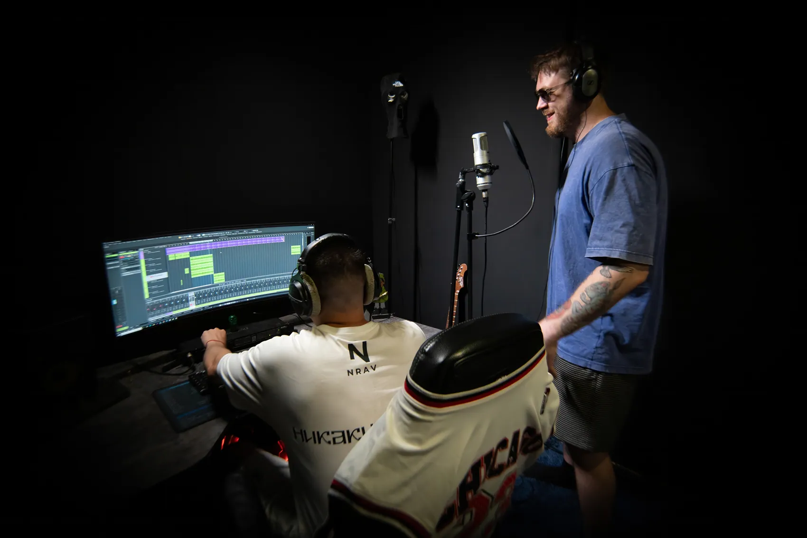
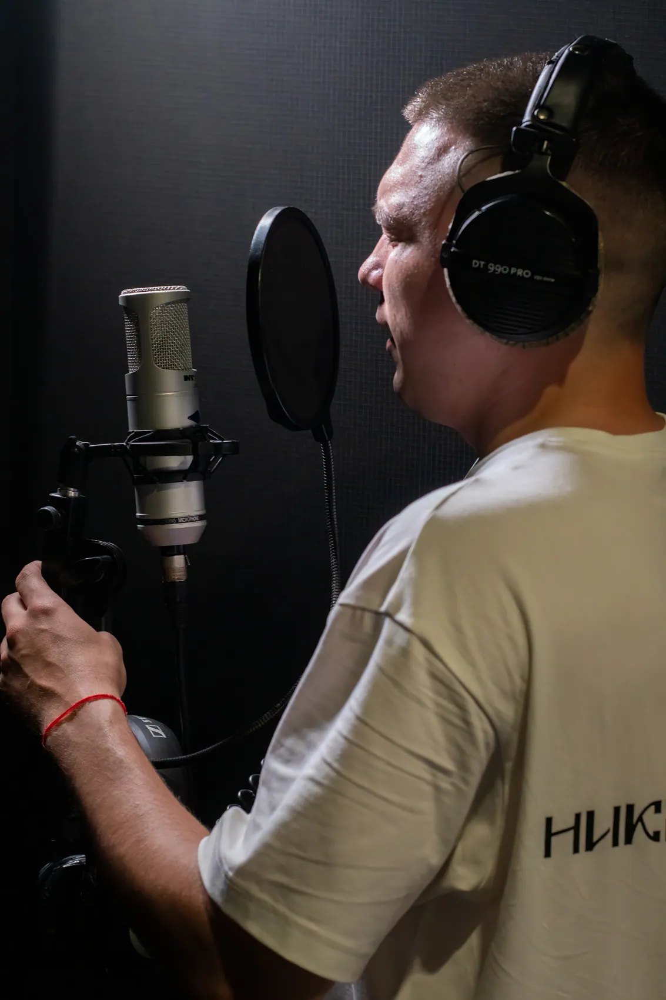
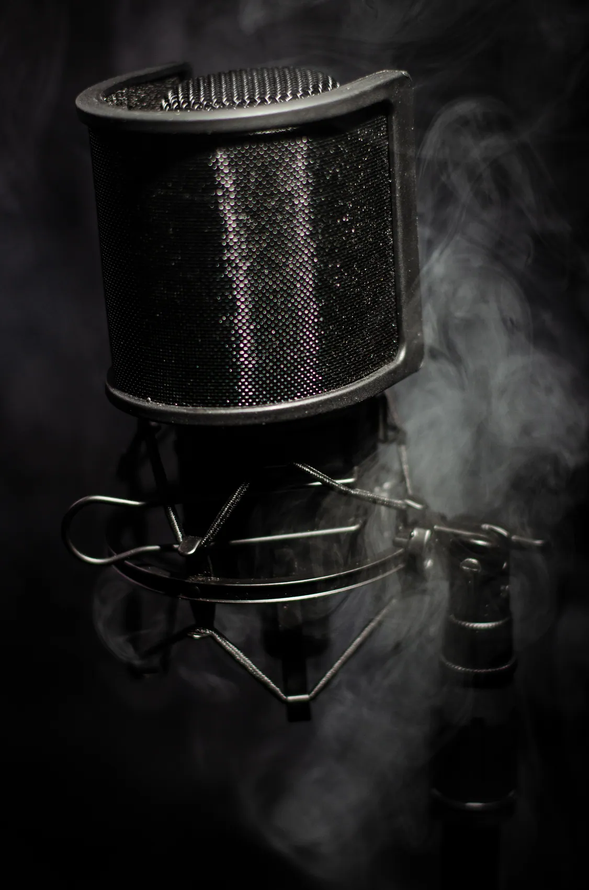
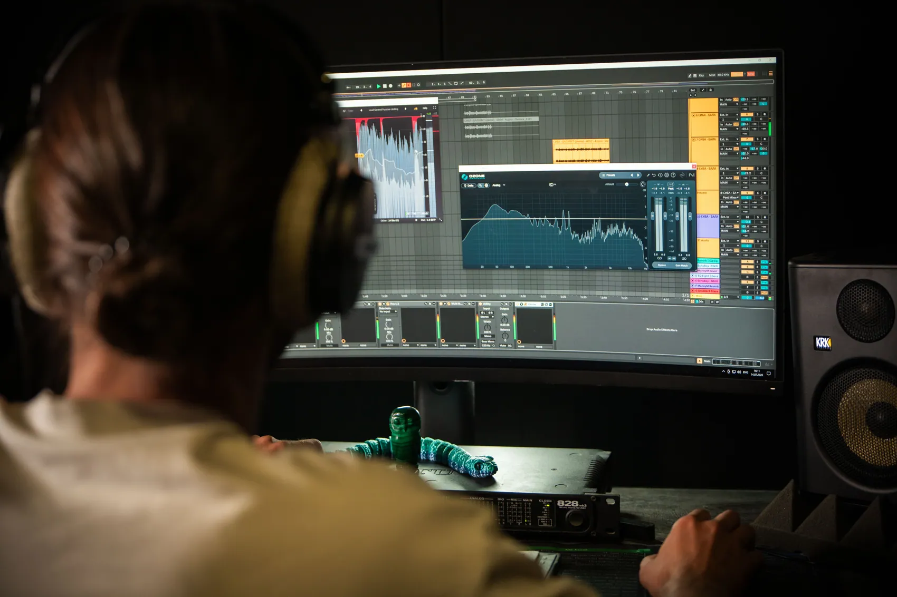

Гострайтинг
Песня, которой у тебя ещё нет

Главная / Звукозапись
REVOLVER SOUND · 18 М² · 3×6Запишем голос, сведём и отдадим файлы. Первый раз? Приходи с черновиком — разберёмся.

Первый раз? Можно прийти с черновиком. Звукорежиссёр поможет записать несколько дублей и выбрать лучший.
Скинуть демо заранее →

Акустически подготовленное тон-ателье 18 м² (3×6 м). Звукорежиссёр сидит в аппаратной, слышит проблему до того, как она попадёт в мастер, и ведёт тебя по дублям.
Комната небольшая — поэтому голос в ней плотный, а не гулкий.
Води мышью или пальцем: слева направо — частота, сверху вниз — громкость. Кликни по волне — разойдутся круги. Включи звук и сыграй на ней как на терменвоксе.

Здесь будет короткий рассказ о звукорежиссёре и его опыте. Фото и имя добавим после согласования.
Жми на любую услугу — она сразу попадёт в заявку. Стоимость называем после короткого брифа: для каждого проекта она своя.
Песня, которой у тебя ещё нет
В студии и на выезде
Свет, звук, микрофоны
Чтобы релиз услышали
От идеи до сцены
Научим с нуля
Пакет на 5 часов — 6 500 ₽. Без нашего звукорежиссёра — от 900 ₽/час.
Одна цена за весь набор. Видео снимаем в соседнем зале.
Баланс, пространство, современное звучание.
Зависит от числа дорожек и состояния исходников.
Гитары, синты, поканальная запись выступления.
Зависит от числа инструментов и сложности сетапа.
Подготовка и сопровождение выхода на площадки.
Зависит от дистрибьютора, прав и числа релизов.
Мы не обещаем размещение на площадках — модерацию проводят дистрибьютор и сервисы. Работаем с физлицами, ИП и ООО, оплата по счёту возможна.
Расскажи, что хочешь записать или снять, и куда ответить. Можно просто спросить про свободные часы или скинуть демо — послушаем и скажем, с чего начать.
Заявка уйдёт в Telegram: —